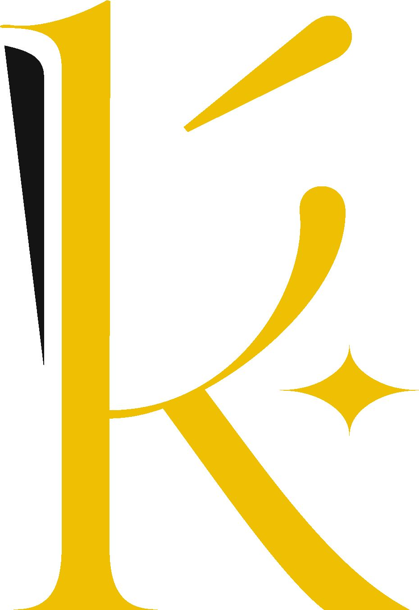
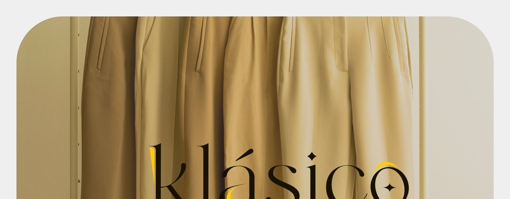
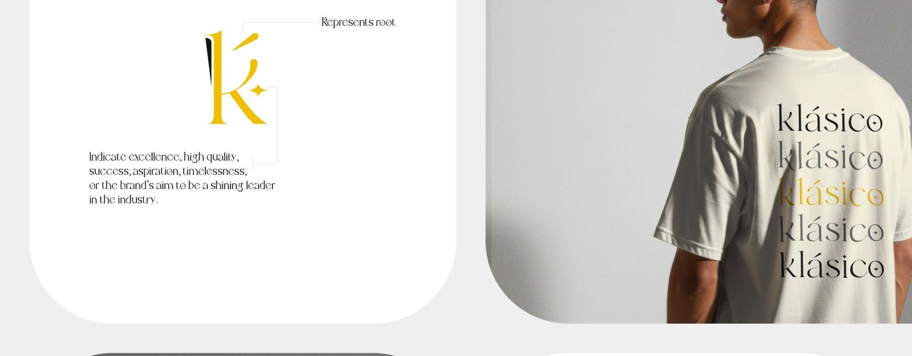
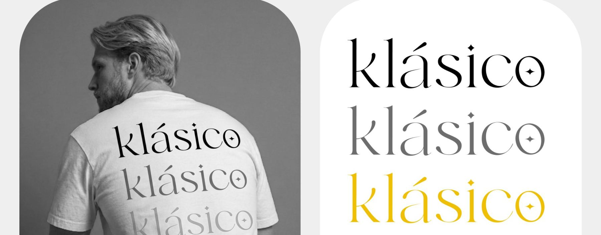
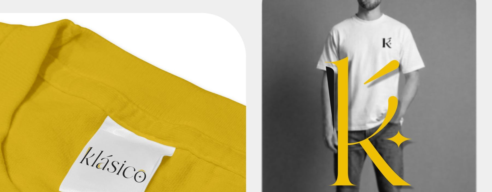
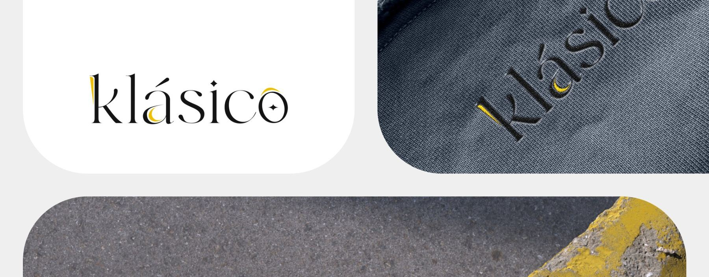
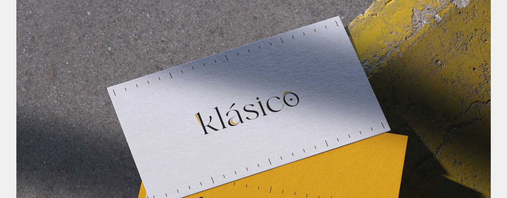

Ornament inside the letterforms
A separate emblem would have been easier to draw and easier to lose. Building the crescent and star into the counters means the wordmark can't be used without them.
A rebrand for a fashion label, built around letterforms that hide a crescent and a star inside the word itself.
Fashion labels tend to solve identity with a typeface choice and a colour. The ambition here was a wordmark that carries meaning in the letterforms — so the brand is recognisable even when the logo isn't present in full.
A fashion mark has to survive being embroidered on a woven label at fifteen millimetres and printed across the back of a shirt at forty centimetres. Most decorative marks work at exactly one of those.
It also had to look considered rather than expensive-by-imitation — the category is full of thin-serif wordmarks that all resolve to the same idea.
The á holds a crescent; the o holds a four-point star; the K monogram carries both. The ornament is inside the letters rather than sitting beside them, so it scales with the type instead of competing with it.
Black and a single saturated yellow, with the wordmark repeated in a descending tint stack as the brand's secondary device.
A separate emblem would have been easier to draw and easier to lose. Building the crescent and star into the counters means the wordmark can't be used without them.
Rather than a pattern, the brand repeats its own name in descending opacity. It fills apparel and packaging without introducing a second graphic language.
The colour has to reproduce on woven labels, screen print and paper stock. A flat spot colour survives all three; anything softer would have shifted across each.






